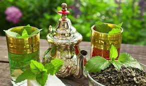
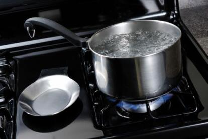
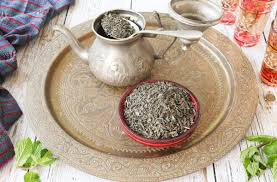
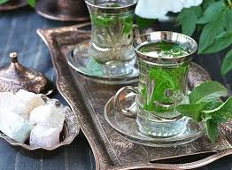

Necesitarás hojas de menta fresca, té verde de buena calidad, azúcar y agua caliente. Para un toque auténtico, utiliza un vaso marroquí.
Calienta el agua en una tetera hasta que esté a punto de hervir. Es importante no sobrecalentar para no quemar las hojas de té.
En la tetera, añade una cucharada de té verde y un poco de agua caliente. Deja reposar un minuto y descarta este primer agua para limpiar el té.
Incorpora las hojas de menta fresca y azúcar al gusto. Llena la tetera con el resto del agua caliente y deja infusionar durante 3-5 minutos.
Sirve el té vertiéndolo desde una altura para crear espuma en el vaso. Disfruta del auténtico sabor del té de menta marroquí.